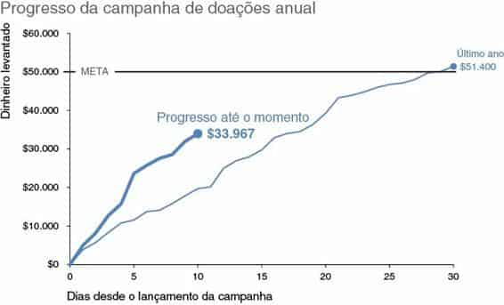
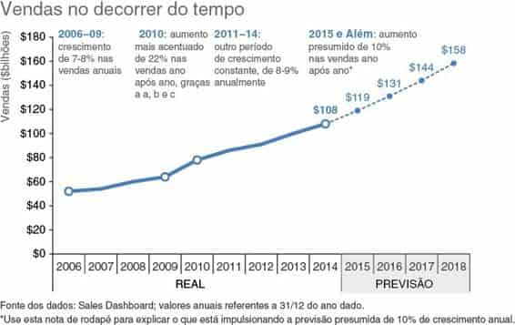
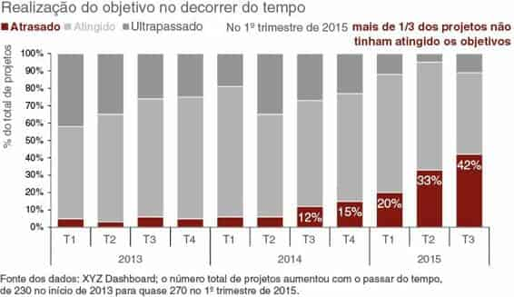
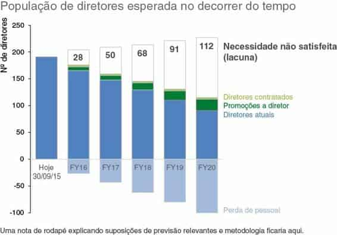
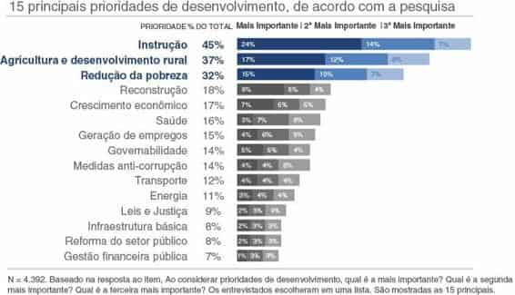

Até aqui, abordamos várias lições que você pode empregar para melhorar sua capacidade de se comunicar com dados. Agora que você entende os fundamentos do que compõe um visual eficaz, vamos considerar mais alguns exemplos da “boa” visualização de dados. Antes de estudarmos nossa última lição, neste capítulo vamos ver vários modelos visuais e discutir o processo mental e as escolhas de design que levaram à sua criação, utilizando as lições já estudadas.
Em vários exemplos, você notará algumas considerações semelhantes. Ao criar cada exemplo, pensei em como queria que o público processasse a informação e fiz escolhas correspondentes a respeito do que enfatizar e chamar sua atenção, assim como do que desenfatizar. Por isso, você verá pontos comuns destacados em razão de cor e tamanho. A escolha do modelo de apresentação, a ordem relativa dos dados, o posicionamento de elementos e o uso de palavras também são discutidos em vários casos.
Essa repetição é útil para reforçar os conceitos nos quais estou pensando e as escolhas de design resultantes nos vários exemplos.
Cada visual destacado foi criado para atender a necessidade de uma situação específica. Vou discutir os cenários relevantes brevemente, mas não se preocupe muito com os detalhes. Em vez disso, examine e pense sobre cada modelo visual. Considere quais desafios de visualização de dados você encontra, onde a estratégia dada (ou aspectos dela) poderia ser aproveitada.

FIGURA 6.1 GRÁFICO DE LINHAS
A empresa X faz uma “campanha de doações” anual, com duração de um mês, para levantar dinheiro para causas beneficentes. A Figura 6.1 mostra o progresso deste ano até o momento. Vamos considerar o que torna esse exemplo bom e as escolhas deliberadas feitas em sua criação.
As palavras são usadas adequadamente. Tudo está intitulado e legendado, de modo que não há dúvida sobre o que estamos vendo. Estão presentes os títulos do gráfico, do eixo vertical e do horizontal. As várias linhas do gráfico são legendadas diretamente, de modo que não há trabalho de ir e vir entre uma legenda e os dados para decifrar o que está representado. O bom uso do texto torna esse visual acessível.
Aplicando o teste do “para onde seus olhos são atraídos?”, descrito no Capítulo 4, percorro o título do gráfico brevemente e, então, sou atraída para a tendência “Progresso até o momento” (onde queremos que o público se concentre). Quase sempre uso cinza escuro para título de gráfico. Isso garante que ele se destaque, mas sem o forte contraste obtido com preto puro sobre branco (em vez disso, deixo o uso de preto para cor de destaque, quando não estou usando outras cores). Vários atributos pré-atentivos são empregados para chamar a atenção para a tendência “Progresso até o momento”: cor, espessura da linha, presença de marcador e legenda de dados no ponto final e o tamanho do texto correspondente.
No que diz respeito ao contexto mais amplo, são incluídos dois pontos para comparação, mas cuja ênfase foi retirada para que o gráfico não se torne visualmente opressivo. A meta de $50.000 foi desenhada no gráfico para referência, mas colocada em segundo plano pelo uso de uma linha fina; a linha e o texto têm o mesmo cinza do resto dos detalhes do gráfico. As doações do ano passado no decorrer do tempo foram incluídas, mas a ênfase também foi retirada com o uso de uma linha mais fina e um azul mais claro (para vinculá-la visualmente ao progresso deste ano sem competir pela atenção).
Duas decisões deliberadas foram tomadas com relação às legendas de eixo.
No eixo y vertical, você poderia pensar em arredondar os números para milhares — para que o eixo variasse de $0 a $60 e o título mudasse para “Dinheiro levantado (milhares de dólares)”. Se os números estivessem na escala de milhões, eu provavelmente teria feito isso. Contudo, para mim, pensar em números na casa dos milhares não é tão intuitivo; assim, em vez de mexer com a escala aqui, preservei os zeros nas legendas do eixo y.
No eixo x horizontal, não precisamos legendar cada dia, pois estamos mais interessados na tendência global, não no que aconteceu em um dia específico.
Como temos dados até o 10º dia de um mês de 30 dias, optei por legendar cada 5º dia no eixo x (dado que é sobre dias que estamos falando, outra possível solução seria legendar cada 7º dia e/ou adicionar as supercategorias semana 1, semana 2 etc.). Esse é um daqueles casos em que não há uma única resposta certa: você deve pensar no contexto, nos dados e em como quer que seu público use o visual, e tomar uma decisão deliberada levando isso em consideração.

FIGURA 6.2 GRÁFICO DE LINHAS ANOTADO COM PREVISÃO
A Figura 6.2 mostra um gráfico de linhas anotado de vendas anuais reais e previstas.
Muitas vezes, vejo dados previstos e reais representados juntos como uma só linha, sem nenhum aspecto distintivo para diferenciar os números da previsão do restante. Isso é um erro. Podemos usar dicas visuais para fazer uma distinção entre os dados reais e previstos, facilitando a interpretação da informação. Na Figura 6.2, a linha cheia representa os dados reais e uma linha pontilhada mais fina (que traz certa conotação de menos certeza do que uma linha cheia escura) representa os dados previstos. A clara legendagem de Real e Previsão sob o eixo x ajuda a reforçar isso (escritos em maiúsculas para facilitar o mapeamento), com a parte da previsão visualmente um pouco separada por meio do sombreado claro no fundo.
Nesse visual, tudo foi colocado em segundo plano por meio do uso de fonte e elementos cinzas, exceto o título do gráfico, as datas dentro das caixas de texto, os dados (linha), marcadores de dados escolhidos e legendas de dados numéricos de 2014 em diante. Quando observo a hierarquia visual dos elementos, meus olhos vão primeiro para o título do gráfico na parte superior esquerda (devido à posição e ao atributo pré-atentivo do texto cinza escuro mais largo, discutido no exemplo anterior) e depois para as datas azuis nas caixas de texto, ponto em que posso fazer uma pausa e ler para contextualizar um pouco, antes de mover os olhos para baixo, a fim de ver o ponto ou tendência correspondente nos dados. São incluídos marcadores de dados somente para os pontos referenciados na anotação, tornando rápido o processo de ver qual parte dos dados é relevante para qual anotação.
(Originalmente, os marcadores de dados eram azuis uniformes, mas mudei para brancos com contorno azul, o que os fez se destacarem um pouco mais, como eu queria; os marcadores de dados da previsão são menores e em azul uniforme, porque ali, branco com contorno azul ficaria saturado demais contra as linhas pontilhadas.)
A legenda numérica $108 aparece em negrito. Isso está enfatizado intencionalmente, pois é o último ponto de dados reais e a âncora para a previsão. Os pontos de dados históricos não são legendados. Em vez disso, o eixo y é preservado para dar uma ideia geral da magnitude, pois queremos que o público enfoque tendências relativas, não valores precisos. As legendas de dados numéricos são incluídas nos pontos de dados da previsão para dar ao público um claro entendimento das expectativas futuras.
Todo texto no visual tem o mesmo tamanho, exceto onde foram tomadas decisões intencionais para alterá-lo. O título do gráfico é maior. A ênfase da nota de rodapé foi tirada com uma fonte menor e um posicionamento de baixa prioridade na parte inferior do visual, a fim de que esteja lá para ajudar na interpretação, se necessário, mas não chama a atenção.

FIGURA 6.3 GRÁFICO DE BARRAS EMPILHADAS A 100%
O gráfico de barras empilhadas da Figura 6.3 é um exemplo visual do mundo da consultoria. Cada projeto de consultoria tem objetivos específicos associados. O progresso em relação a esses objetivos é avaliado trimestralmente e designado como “Não Alcançado”, “Alcançado” ou “Superado”. O gráfico de barras empilhadas mostra a porcentagem de projetos totais em cada uma dessas categorias no decorrer do tempo. Como nos exemplos anteriores, não se preocupe muito com os detalhes aqui; em vez disso, reflita sobre o que pode ser aprendido a partir das considerações sobre o design que levaram à criação dessa visualização de dados.
Vamos considerar primeiro o alinhamento dos objetos dentro desse visual. O título do gráfico, a legenda e o título do eixo y vertical estão todos alinhados na posição superior esquerda. Isso significa que nosso público encontra informações sobre como ler o gráfico antes de chegar aos dados. No lado esquerdo, o título do gráfico, a legenda, o título do eixo y e a nota de rodapé estão todos alinhados, criando uma linha limpa no lado esquerdo do visual.
No lado direito, o texto na parte superior está justificado à direita e alinhado com a última barra de dados que contém os pontos de dados descritos (usando o princípio da proximidade da Gestalt). Essa mesma caixa de texto está alinhada verticalmente com a legenda do gráfico.
Com relação a focalizar a atenção do público, a cor vermelho é usada como a única a chamar a atenção (para mim, o vermelho primário tende a ser forte demais; portanto, frequentemente opto por um tom vermelho queimado, como fiz aqui. Tome cuidado com tons muito fortes, prefira tons mais fechados como azul marinho ou vermelho queimado). Todo o resto é cinza.
Foram usadas legendas de dados numéricos — uma dica visual adicional sinalizando importância, dado o nítido contraste de branco sobre vermelho e texto grande — nos pontos em que queremos que o público se concentre: a crescente porcentagem de projetos que não estão atingindo os objetivos.
O restante dos dados foi preservado para contextualizar, mas colocados em segundo plano para que não concorram pela atenção. Tons de cinza um pouco diferentes foram usados para que ainda se possa focalizar uma ou outra série de dados por vez, mas não desvie a atenção da clara ênfase na série vermelha.
As categorias seguem uma escala de “Não Alcançado” a “Superado” e essa ordem é aproveitada de baixo para cima dentro das barras empilhadas. A categoria “Não Alcançado” está mais próxima ao eixo x, facilitando a visualização da mudança no decorrer do tempo por causa do alinhamento das barras no mesmo ponto de partida (o eixo x). A mudança no decorrer do tempo da categoria “Superado” também é fácil de ver, graças ao alinhamento uniforme ao longo da parte superior do gráfico. É mais difícil ver a mudança no decorrer do tempo na porcentagem dos projetos que atingiram seus objetivos, pois não há nenhuma linha de base uniforme na parte superior ou inferior do gráfico; mas, como essa é uma comparação de baixa prioridade, não há problema.
Palavras tornam o visual acessível. O gráfico tem um título, o eixo y tem um título e o eixo x utiliza supercategorias (anos) para reduzir a legendagem redundante e facilitar o mapeamento dos dados. As palavras na parte superior direita reforçam no que devemos prestar atenção (vamos falar muito mais sobre palavras no contexto do storytelling, no Capítulo 7). A nota de rodapé contém um aviso sobre o número total de projetos no decorrer do tempo, um contexto útil que não temos diretamente no visual, devido ao uso de barras empilhadas a 100%.

FIGURA 6.4 USO DE BARRAS EMPILHADAS POSITIVAS E NEGATIVAS
A Figura 6.4 mostra um exemplo do espaço analítico de pessoal. Pode ser útil para olhar adiante a fim de conhecer as necessidades esperadas de talento experiente e identificar quaisquer lacunas que possam ser resolvidas proativamente. Neste exemplo, haverá uma necessidade não satisfeita de diretores, dadas as suposições de acréscimos esperados no pool de diretores no decorrer do tempo, por meio de contratações e promoções, e do decréscimo no pool no decorrer do tempo devido à perda de pessoal (diretores que saem da empresa).
Se considerarmos o caminho percorrido por nossos olhos na Figura 6.4, os meus examinam o título, depois vão diretamente para os grandes números pretos em negrito e os seguem para a direita, até o texto que me diz que isso representa “Necessidade não satisfeita (lacuna)”. Em seguida, meus olhos se dirigem para baixo, lendo o texto, e veem de relance, à esquerda, os dados que cada um descreve, até chegar à última série, “Perda de pessoal”, na parte inferior. Nesse ponto, saltam levemente para frente e para trás, entre as partes “Perda de pessoal” e “Necessidade não satisfeita (lacuna)” das barras, notando que há certo aumento no número total de diretores no decorrer do tempo, ao olhar da esquerda para a direita (provavelmente, porque a empresa global cresce e, como resultado, a necessidade de líderes experientes aumenta), mas que a maior parte da necessidade não satisfeita se dá devido à perda de pessoal no pool de diretores atual.
Foram feitas escolhas intencionais no que diz respeito ao uso de cor nesse visual. Os “Diretores atuais” são mostrados em um azul médio padrão. Os diretores que saem (“Perda de pessoal”) são mostrados em uma versão menos saturada da mesma cor, para vinculá-los visualmente. No decorrer do tempo, você vê menos azul acima do eixo e uma proporção crescente abaixo, à medida que cada vez mais diretores saem. A direção negativa da série “Perda de pessoal” reforça que esse volume representa uma diminuição no pool de diretores. Os diretores acrescentados por meio de contratações e promoções são mostrados em um tom de verde (que transmite conotação positiva). A necessidade não satisfeita é retratada apenas por um contorno, para mostrar espaço vazio visualmente, reforçando que isso representa uma lacuna. Cada uma das legendas de texto à direita é escrita no mesmo tom da série de dados que descrevem, exceto “Necessidade não satisfeita (lacuna)”, que é escrita com o mesmo texto preto, grande e em negrito das legendas de dados dessa série.
A ordem das várias séries de dados dentro das barras empilhadas é deliberada. “Diretores atuais” é a base e, como tal, é mostrada começando no eixo horizontal. Como já mencionei, a série negativa “Perda de pessoal” fica abaixo dela, em uma direção negativa. Acima de “Diretores atuais” estão os acréscimos: promoções e contratações. Por último, na parte superior (onde nossos olhos chegam antes dos dados subsequentes), encontramos “Necessidade não satisfeita (lacuna).”
O eixo y é preservado para que o leitor tenha uma ideia da magnitude total (tanto na direção positiva como na negativa), mas é colocado em segundo plano por meio do texto cinza. Somente os pontos específicos em que devemos prestar atenção — “Necessidade não satisfeita (lacuna)” — são diretamente legendados com valores numéricos.
Todo texto no visual tem o mesmo tamanho, exceto onde foram tomadas decisões de enfatizar mais ou tirar a ênfase de componentes. O título do gráfico é maior. O título do eixo “Nº de diretores” é um pouco maior para facilitar a leitura do texto girado. O texto e os números de “Necessidade não satisfeita (lacuna)” são maiores e mais escuros do que tudo mais no visual, pois é onde queremos que o leitor preste atenção. A nota de rodapé é escrita em texto menor para que esteja lá quando necessário, mas não chame a atenção. Tornando-a cinza e colocando em uma posição de baixa prioridade, na parte inferior do visual, retiramos ainda mais a ênfase da nota de rodapé.

FIGURA 6.5 BARRAS EMPILHADAS HORIZONTAIS
A Figura 6.5 mostra os resultados de uma pesquisa sobre prioridades relativas em um país em desenvolvimento. São muitas informações, mas graças à ênfase e à retirada de ênfases estratégicas de componentes, ela não se torna visualmente opressiva.
Barras empilhadas fazem sentido aqui, dada a natureza do que está sendo representado: prioridade principal (na primeira posição, com tom mais escuro), 2a prioridade (na segunda posição e em um tom um pouco mais claro) e 3a prioridade (na terceira posição e em um tom ainda mais claro).
Orientar o gráfico horizontalmente significa que os nomes de categoria ao longo da esquerda são fáceis de ler em texto horizontal.
As categorias são organizadas verticalmente em ordem decrescente de “% do Total”, dando ao público uma construção clara para usar ao interpretar os dados. As categorias maiores estão em cima, de modo que as vemos primeiro.
As três principais prioridades são especificamente enfatizadas com o uso de cor (a narrativa que acompanhava a versão original deste visual as enfocava).
Essa cor é aproveitada para o nome da categoria, % do total e barras empilhadas de dados. Essa cor uniforme vincula os componentes visualmente.
Um ponto decisivo ao representar dados em gráfico é se o eixo será preservado, se os pontos de dados (ou alguns deles) serão legendados diretamente ou ambos. Neste caso, as legendas de dados numéricos dentro das barras foram preservados, mas a ênfase foi retirada com texto menor (orientado para a esquerda, o que cria uma linha limpa quando você percorre as legendas de dados do “Mais importante”, fazendo-a parecer um pouco menos saturada do que texto orientado para a direita ou centralizado, que variaria na posição em cada uma das barras). A ênfase das legendas de dados foi retirada ainda mais por meio da cor em que foram escritos: em tons de azul claro ou cinza que não criam contraste tão nítido quanto legendas brancas sobre uma barra colorida. O eixo x foi eliminado. Aqui, assumimos implicitamente que os valores específicos são importantes o bastante para legendar. Outro cenário pode exigir uma estratégia diferente.
Conforme observado em vários exemplos anteriores, palavras são bem usadas neste visual. Tudo está intitulado e legendado. Os títulos “Prioridade” e “% do Total” são escritos em maiúsculas para fácil mapeamento. A legenda para interpretação das barras aparece imediatamente acima da primeira barra de dados, com as palavras-chave “Mais”, “2ª” e “3ª” em negrito para enfatizar.
O detalhe adicional está descrito na nota de rodapé.
Podemos aprender examinando visuais eficazes e considerando as escolhas de design feitas para criá-los. Pelos exemplos deste capítulo, reforçamos várias lições abordadas até aqui. Examinamos a escolha do tipo de gráfico e a ordenação de dados. Consideramos para onde nossos olhos são atraídos e em que ordem, graças às estratégias empregadas para enfatizar e desenfatizar componentes por meio do uso de cor, espessura e tamanho. Discutimos o alinhamento e o posicionamento de elementos. Consideramos o uso apropriado de texto que torna os visuais acessíveis por meio de titulação clara, legendagens e anotação.
Há algo a ser aprendido em cada exemplo de visualização de dados que você encontrar — tanto boas como ruins. Quando vir algo de que goste, faça uma pausa para considerar o porquê. Os que seguem meu blog, em inglês, (storytellingwithdata.com) talvez saibam que também sou cozinheira entusiasmada, e frequentemente aproveito a seguinte metáfora da comida na analítica de dados: na visualização de dados, raramente há uma única resposta “certa” (se houver); em vez disso, existem bons sabores. Os exemplos que examinamos neste capítulo são a culinária gourmet dos gráficos.
Dito isso, diferentes pessoas tomarão diferentes decisões ao se depararem com o mesmo desafio de visualização de dados. Por isso, inevitavelmente fiz nesses visuais algumas escolhas de design que você poderia ter tratado de forma diferente. Tudo bem. Espero que, ao descrever meu processo mental, você possa entender por que fiz tais escolhas de design. Essas são considerações a lembrar em seu próprio processo de design. O mais importante é que suas escolhas de design sejam exatamente isso: intencionais.
Agora você está pronto para a última lição sobre storytelling com dados: contar uma história.